DAY7 前半 / 超・初心者向け
リード文は「この記事は自分のためだ」と思ってもらう入口
基本は、読者の悩みを示す → 共感する → 記事を読むメリットを伝える。必要に応じて実績や専門性を加えると、さらに信頼されやすくなります。
前半で覚えること：
共感とメリットを明確にして、本文を読み進める理由を作る。
1検索意図誰が困っている？
2悩み3つ代表を選ぶ
3共感気持ちを言葉に
4メリット読む価値を示す
5整える1段落へ
Day7前半①
リード文は「挨拶」ではなく、本文への入口
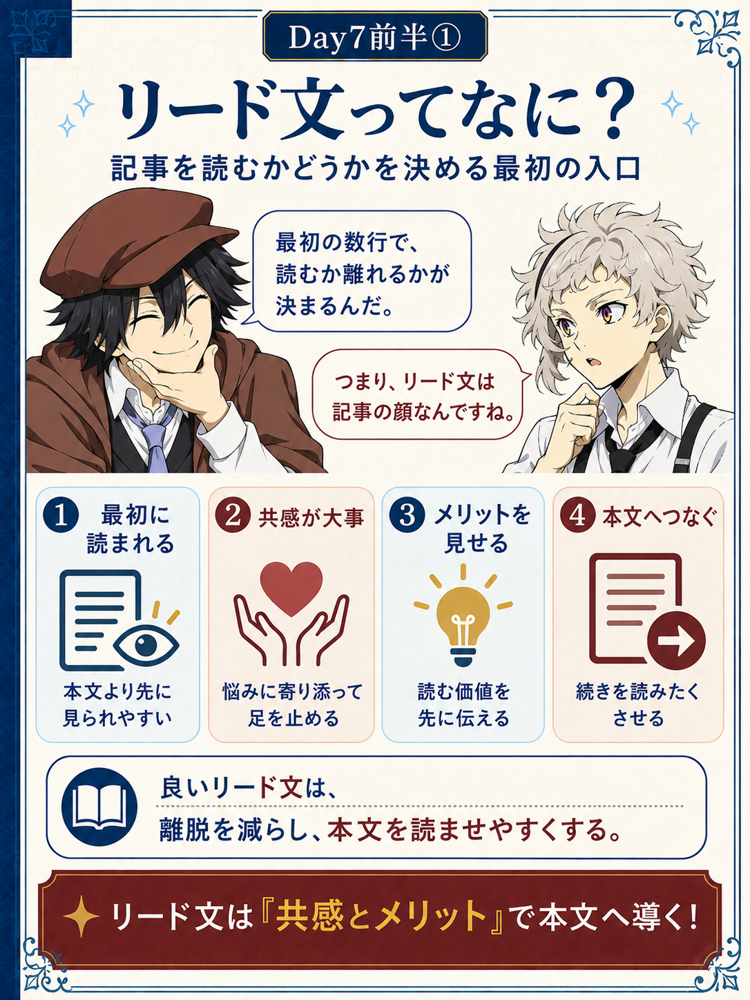
記事を読むか離れるかは、最初の数行で決まりやすい。
読者は記事を開いてすぐ、「自分に必要か」「読む価値があるか」を判断します。本文が良くても、入口で離れられたら読んでもらえません。
江戸川乱歩「本文が立派でも、入口で帰られたら読まれない。最初に“読む理由”を作るんだ。」
中島 敦「つまり、リード文は記事の説明より“この先を読んでください”と案内する場所なんですね。」
まずは2つ： 「共感」と「読むメリット」。初心者はここからで十分です。
Day7前半②
最初のカギは「共感」――読者の悩みを外さない
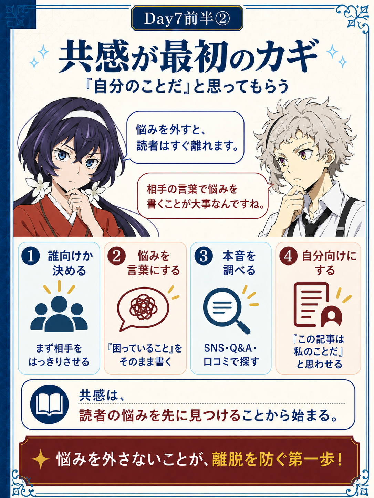
「この記事、自分のためだ」と思ってもらう。
共感は、ただ優しい言葉を書くことではありません。読者が実際に困っていることを、その人が使いそうな言葉で書くことです。
ぼんやり「ブログで悩んでいませんか？」
具体的「情報が多すぎて、何から始めればいいか分からない」
泉 鏡花「悩みを外すと、読者はすぐ離れます。」
中島 敦「相手の言葉で悩みを書くことが大事なんですね。」
Day7前半③
「読むと何が得られるか」を先に見せる
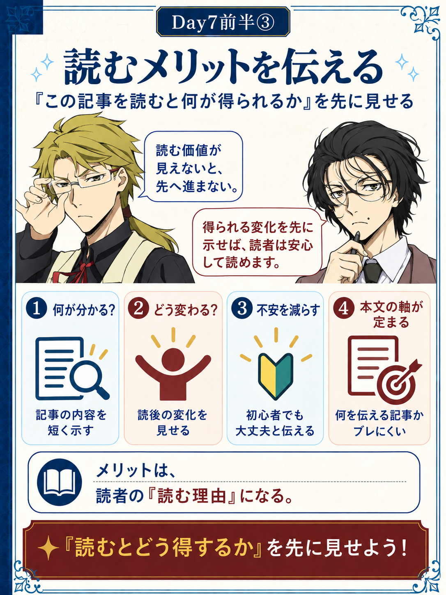
メリットは、読者の「読む理由」になる。
「何について書くか」だけでなく、「読んだあとにどう変わるか」まで伝えます。読者は、自分の悩みが前に進みそうだと感じると読み続けやすくなります。
国木田独歩「読んだ結果、何ができるようになるかまで示せ。」
坂口 安吾「得られる変化が見えれば、読者は安心して先へ進める。」
Day7前半④
迷ったら6つの流れを土台にする
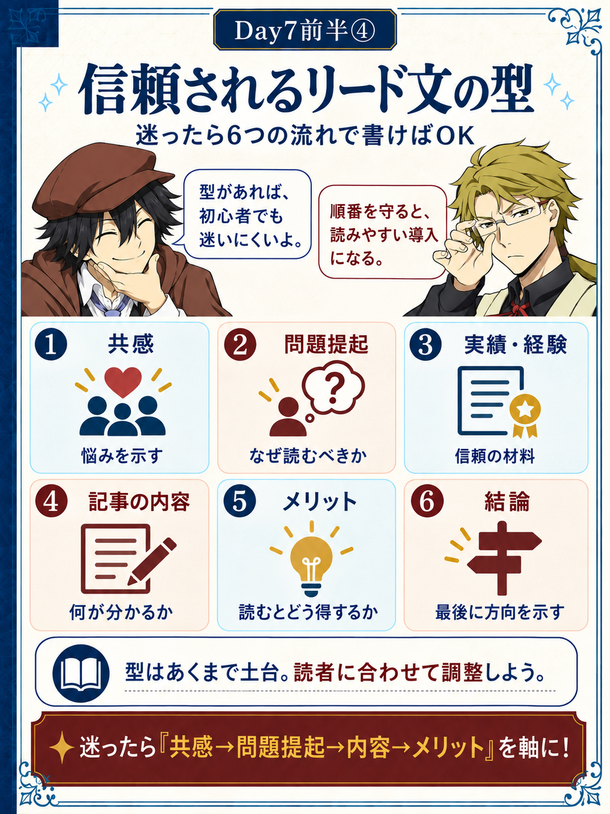
型は、初心者が迷わないための土台。
① 共感読者の悩みを示す
② 問題提起なぜ読む必要がある？
③ 実績・経験必要なら信頼材料を足す
④ 記事の内容何が分かる記事？
⑤ メリット読むとどう得する？
⑥ 結論最後に方向を示す
全部を毎回入れなくてもOK。 まずは共感とメリットを軸にします。
Day7前半⑤ / 実習1
目次から「読者の悩み」を3つだけ選ぶ
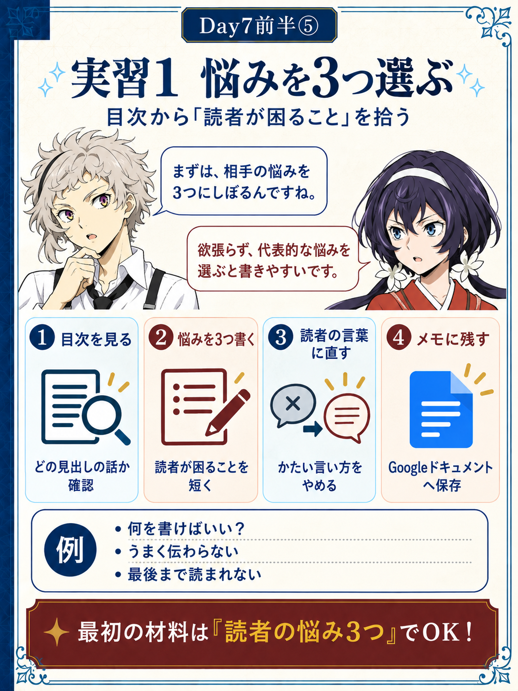
最初の材料は「読者の悩み3つ」でOK。
記事の目次を見て、「この記事を検索する人は何に困っている？」を3つだけ書き出します。最初から文章にしなくて大丈夫です。
例
・何を書けばいいか分からない
・うまく伝わらない
・最後まで読まれない
中島 敦「まず材料を出して、文章はその後でいいんですね。」
泉 鏡花「欲張らず、代表的な悩みを3つで十分。」
Day7前半⑥ / 実習2
「悩み → 共感 → メリット」の順につなぐ
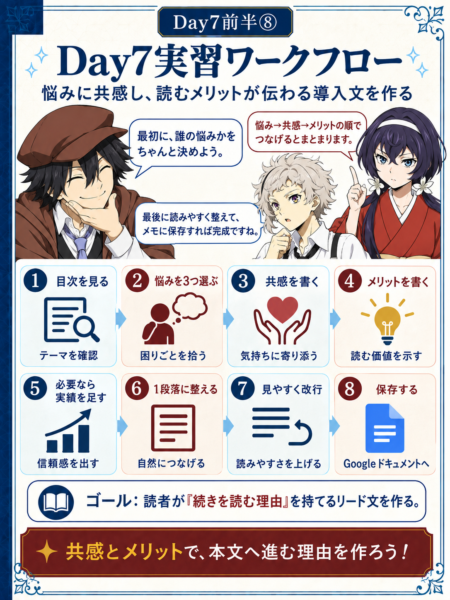
3つを順番に並べるだけで、導入文の骨組みになる。
超シンプルな型
悩み：「何から書けばいいか分からない」
共感：「最初は迷いますよね」
メリット：「この記事では、リード文の作り方を順番に説明します」
坂口 安吾「難しい言い回しはいらない。順番に並べれば形になる。」
江戸川乱歩「最後に自然な文章へ整えればいいよ。」
Day7前半⑦
悩みの深さで、長さと寄り添い方を変える
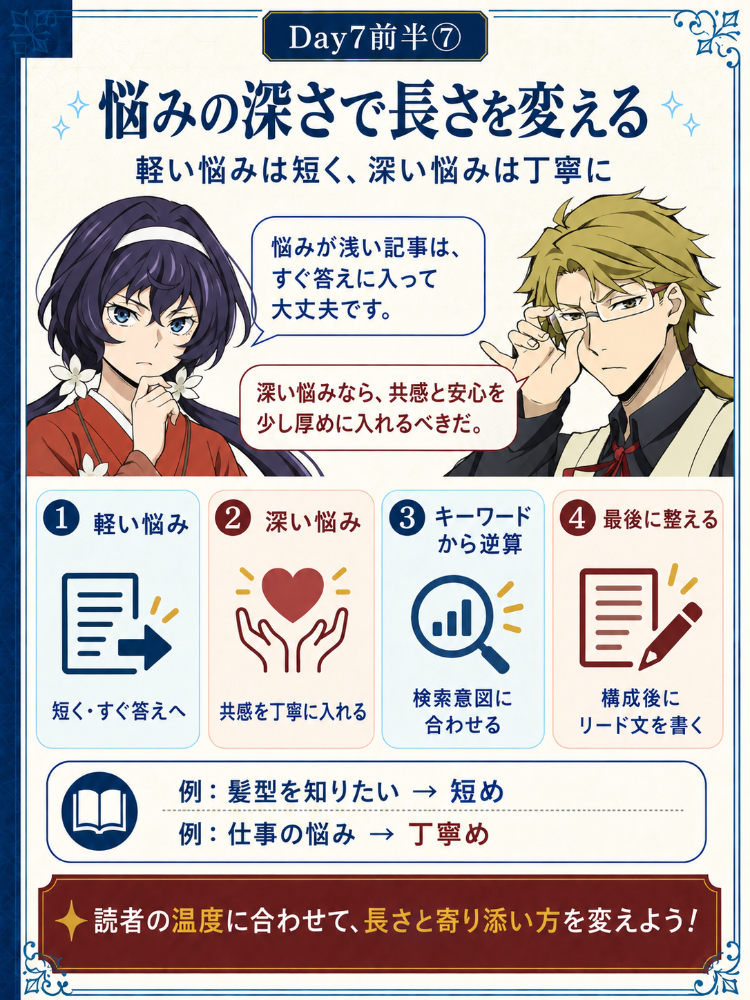
軽い悩みは短く、深い悩みは丁寧に。
軽い悩みすぐ答えに入る。例：髪型を知りたい。
深い悩み共感と安心を少し厚めに。例：仕事の悩み。
泉 鏡花「軽い悩みは、すぐ答えに入って大丈夫です。」
国木田独歩「深い悩みなら、共感と安心を少し厚めに入れるべきだ。」
Day7前半⑧ / まとめ
Day7前半ワークフロー：共感とメリットで本文へ導く
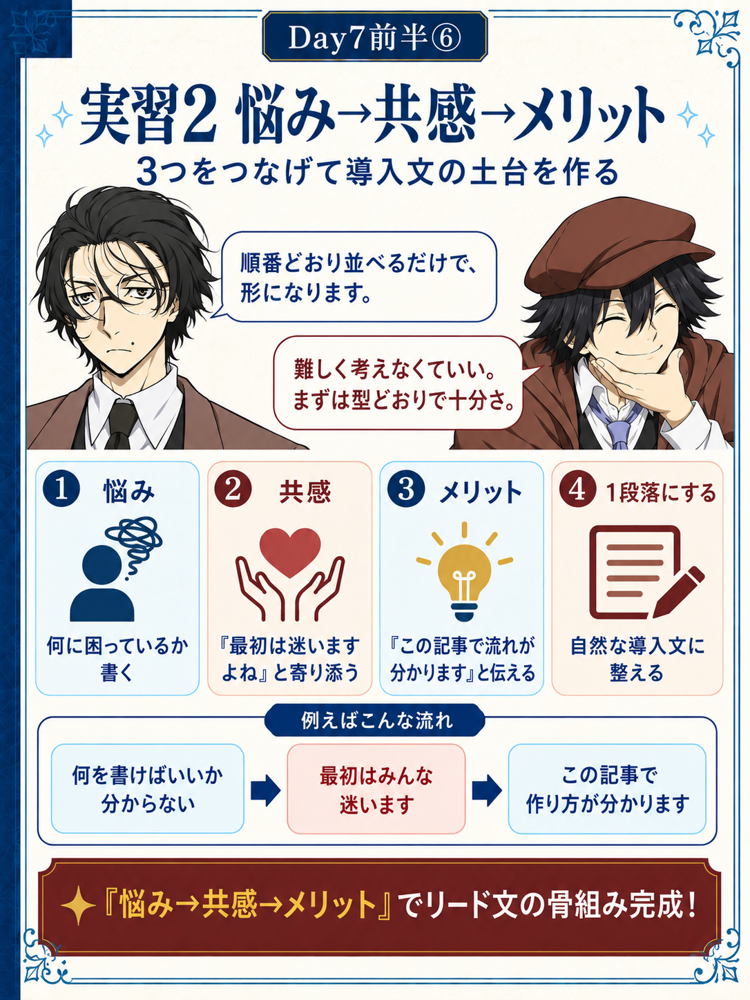
ゴール：読者が「続きを読む理由」を持てるリード文を作る。
1目次を見るテーマ確認
2悩み3つ困りごとを拾う
3共感を書く気持ちに寄り添う
4メリット読む価値を示す
5保存あとで直せる形へ
前半のゴール：
「誰の悩みか」「読むとどうなるか」が分かるリード文の骨組みを作れればOK。
DAY7 後半 / AIで下書き → 自分の言葉で仕上げる
AIにリード文を作ってもらい、体験・根拠・読後の変化を足して仕上げる
後半は、前半の「悩み・共感・メリット」に、根拠・理想の未来・記事内容・行動を加えます。AIに下書きを作らせ、最後は人間が確認して完成させます。
後半で覚えること：
悩み → 共感 → 根拠 → 理想の未来 → 記事内容 → 行動
商品やサービスでは、機能より「使った後にどう変わるか」を中心に伝える。
1悩み誰が困る？
2共感気持ちを代弁
3根拠体験・数字
4未来どう変わる？
5内容何を解説？
6行動先へ進む
Day7後半①
リード文は「続きを読む理由」を作る入口
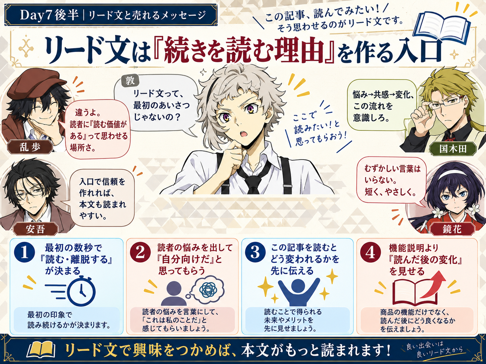
読者に「自分向け」「先に答えがある」と伝える。
リード文は、きれいな挨拶を書く場所ではありません。読者に「この記事は自分のためだ」「この先を読む価値がある」と思ってもらう場所です。
中島 敦「前半では共感とメリットを作りました。後半は、そこに信頼できる材料も足すんですね。」
江戸川乱歩「そう。読者の頭の中に“読む理由”ができれば、本文へ進みやすくなる。」
Day7後半②
「悩み → 共感 → 根拠 → 未来」で信頼を作る
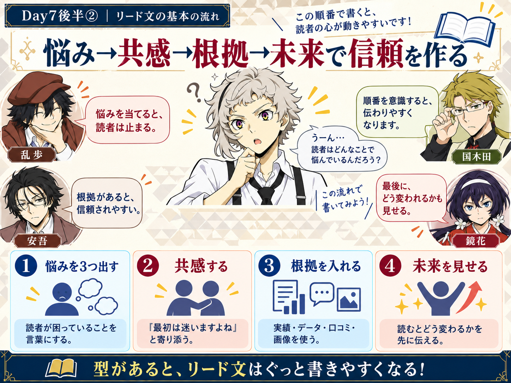
悩みだけで終わらず「こうなれる」まで見せる。
悩み何に困っている？
共感その気持ちを代弁
根拠なぜそう言える？
未来読むとどう良くなる？
国木田独歩「順番を守れば、読者に必要な情報を抜かしにくい。」
泉 鏡花「最後に未来を見せると、安心して読み進められます。」
Day7後半③
「本当かな？」を消すのが根拠の役割
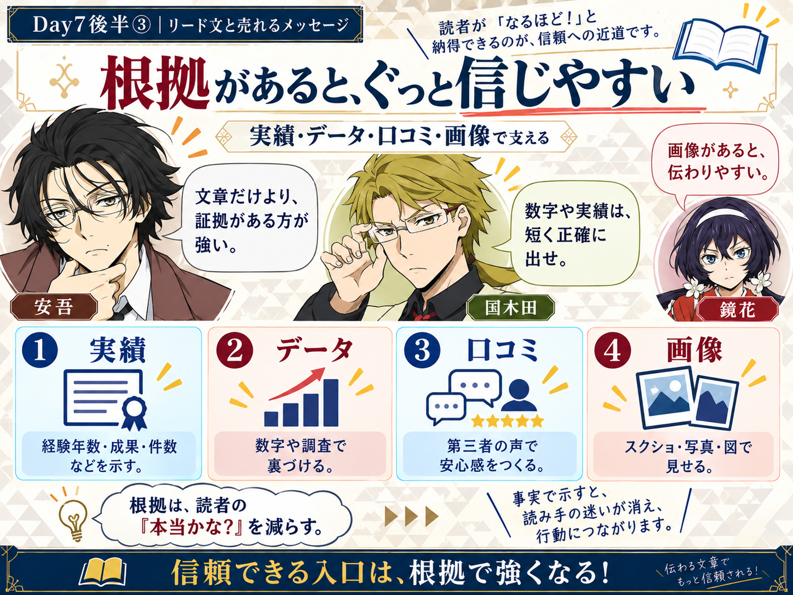
体験・データ・口コミ・画像など、確認できる材料を見せる。
文章だけで「すごいです」と言っても、読者は判断できません。実績・データ・口コミ・写真・スクリーンショットなど、確かめられる材料があると説得力が上がります。
根拠に使えるもの
自分の体験 ／ 調査した数字 ／ 公式情報 ／ お客様の声 ／ 実際の画面・写真
坂口 安吾「“信用してくれ”と頼むより、事実を見せた方が早い。」
中島 敦「自分の体験も、短く入れるだけで記事にしかない情報になりますね。」
Day7後半④
商品を売るなら「機能」より「使った後の変化」
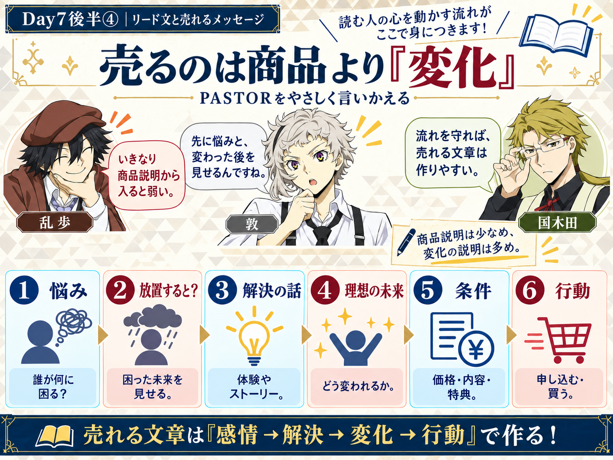
読者が欲しいのは、商品そのものより「使った後の変化」。
商品やサービスを紹介するとき、機能だけを並べても読者には刺さりにくいものです。「使ったら何が楽になる？」「どんな不安が減る？」を伝えます。
P / Problem誰が何に困っている？
A / Amplify放置するとどう困る？
S / Solutionどう解決する？
T / Transformationどう変われる？
O / Offer何が得られる？
R / Response次に何をする？
江戸川乱歩「人は商品より“自分がどう変わるか”を買うんだよ。」
中島 敦「“機能が多い”より“困りごとが減る”の方が分かりやすいです。」
Day7後半⑤ / 実習1
AIにリード文の下書きを作ってもらう
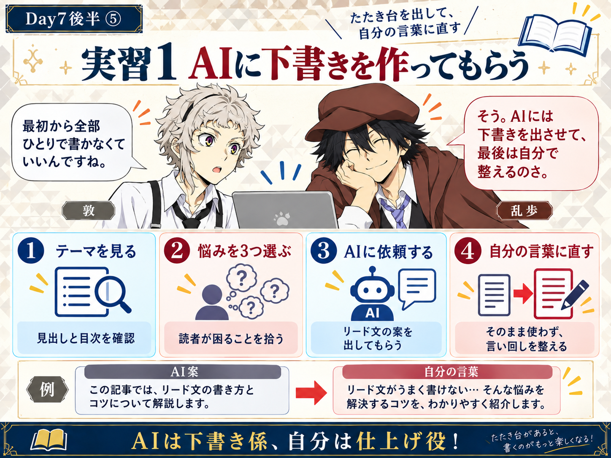
AIは「完成原稿」ではなく「たたき台」を作る係。
前半で選んだ悩み3つ、記事テーマ、読者像をAIへ渡して、まずは下書きを作ります。白紙から全部書く必要はありません。
頼み方の例
「この記事の読者は○○です。悩みは①○○ ②○○ ③○○です。共感・根拠・読後のメリット・記事の要約を入れて、600文字以内のリード文案を作ってください。」
中島 敦「まず形を作って、あとから直すんですね。」
江戸川乱歩「そう。AIは下書き係。完成させるのは君だよ。」
Day7後半⑥ / 実習2
AI文章に「自分しか持っていない材料」を足す
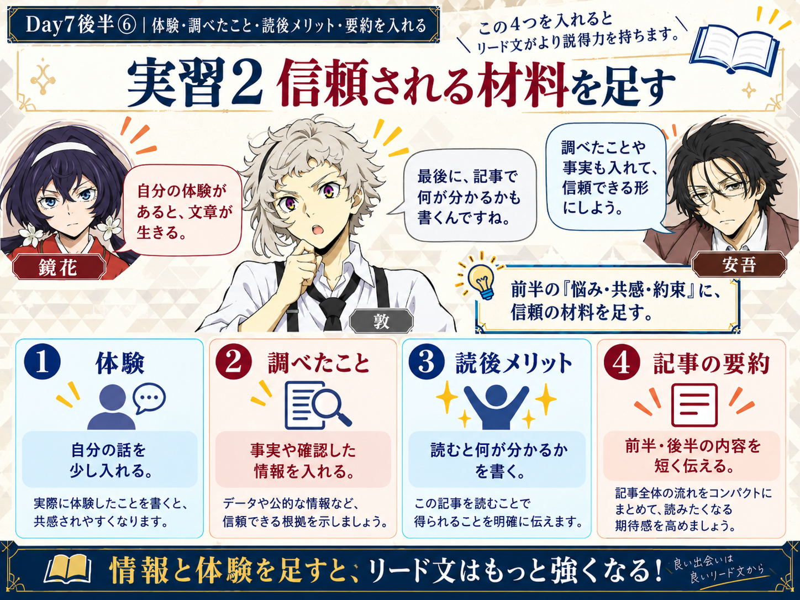
体験・調べたこと・数字を1つ足すだけでも文章が具体化する。
- 本当に体験したことだけを書く
- 調べた数字は元の情報を確認する
- 読後にどう変わるかを自分の言葉で書く
- 記事全体で何を説明するかを短く要約する
坂口 安吾「AIが持っていない材料を入れろ。そこから個性と信頼が生まれる。」
泉 鏡花「作り話の体験は入れない。本当に確認できることだけ。」
Day7後半⑦ / 実習3
事実確認と読みやすさをチェックする
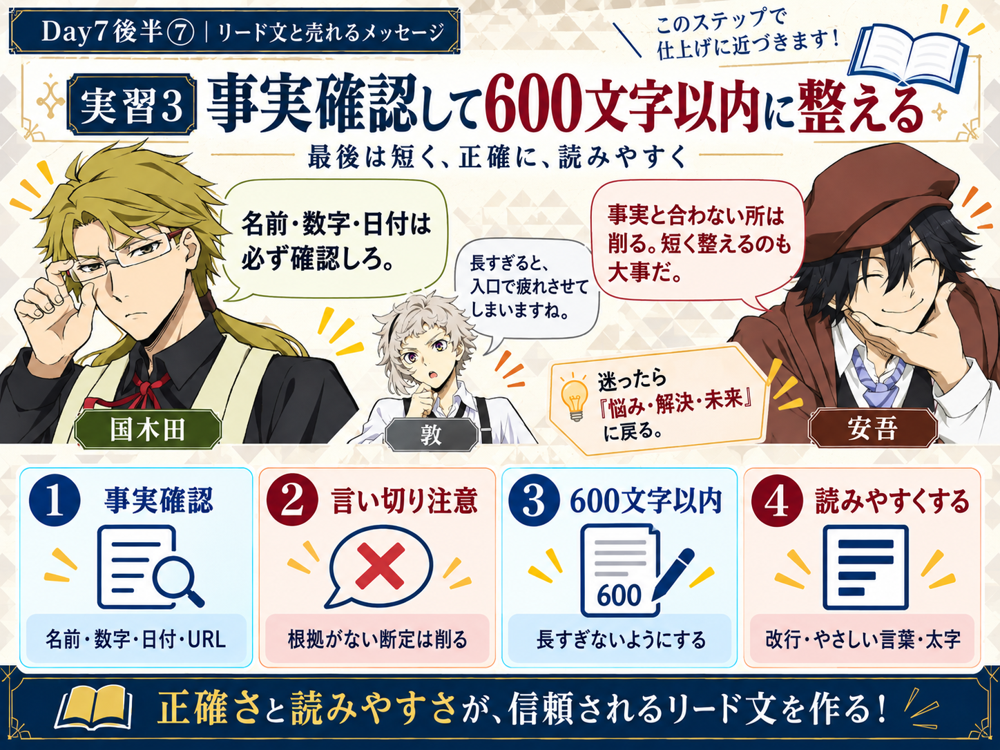
公開前に、正しさと読みやすさの両方を見る。
固有名詞名前は正しい？
数字・日付元データはある？
URL・出典実際に開ける？
断定言い切る根拠はある？
間違っている情報は、文章が上手くても信用を落とします。確認できない情報は削るか、断定を弱めます。
国木田独歩「公開前の確認を怠るな。名前・数字・日付・URLは特にだ。」
中島 敦「読みやすさだけでなく、事実と合っているかも見るんですね。」
Day7後半⑧ / 実習4
最後は「自分の言葉」に直し、600文字以内を目安に整える
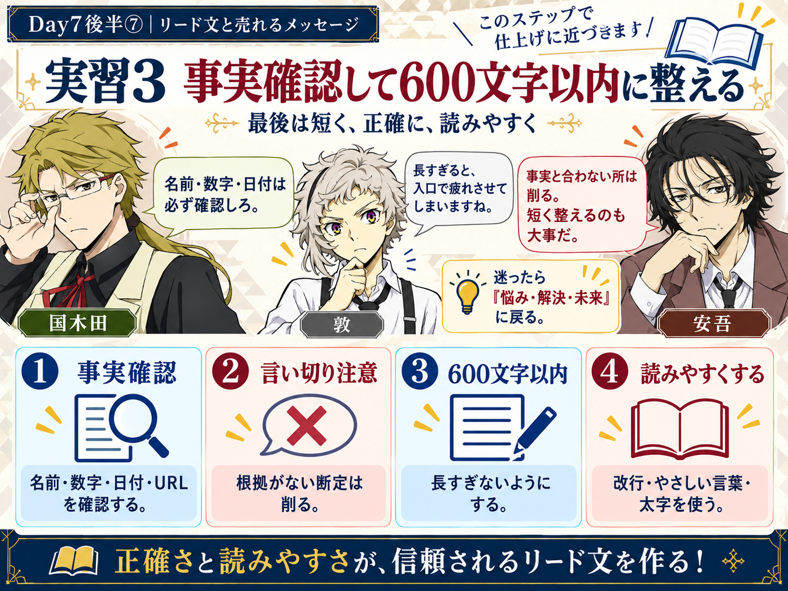
AIの言葉を、そのまま公開しない。
くどい部分を削り、難しい表現をやさしく直し、自分が本当に言える内容だけを残します。600文字以内を目安にすると、スマホでも読みやすい入口にしやすくなります。
中島 敦「AIの文章を少し直すだけでも、自分の文章としてしっくりします。」
坂口 安吾「最後のひと手間でAIっぽさは薄くなる。自分の声に戻せ。」
Day7後半⑨ / 完成
Day7後半ワークフロー：AIで作って、自分の言葉で仕上げる
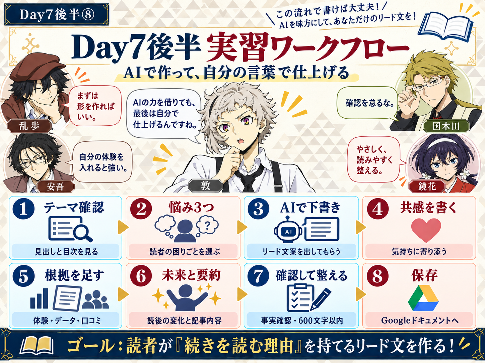
AIは下書き、人間は根拠・判断・仕上げ。
1テーマ誰向け？
2悩み3つ選ぶ
3AI下書き形を作る
4根拠体験を足す
5確認事実を見る
6保存短く整える
後半のゴール：
AIの下書き＋自分の体験・根拠＋読後の未来＋事実確認で、信頼されるリード文を完成させる。